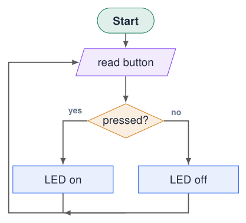
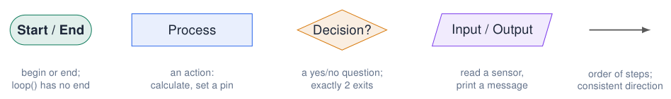
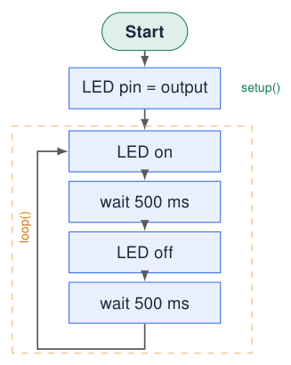
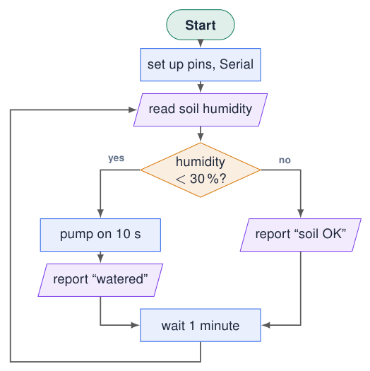
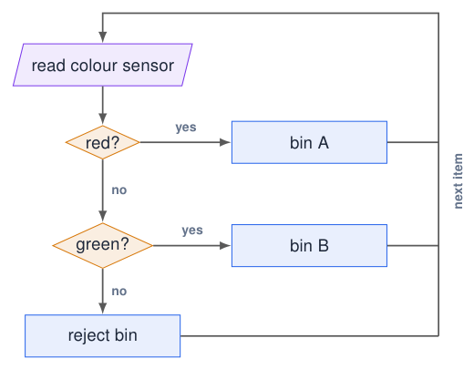
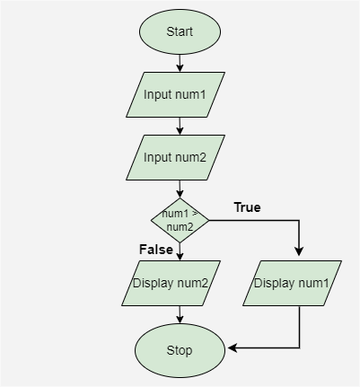
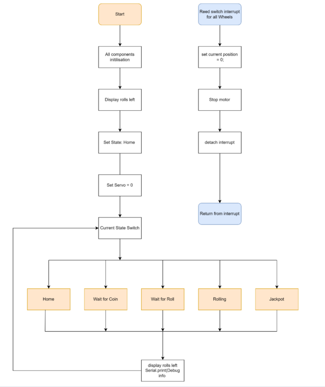

Flowcharts¶
Why flowcharts?¶
Try simulation: Arduino to flowchart
-
A visual diagram of a program or process.
-
Synchronise understanding with the client: does the drawing match what they want?
-
Design the code before typing it.
-
Find logic errors early: a missing “no” branch is easy to see.
-
Explain and document your program in reports.
In this course
Every assignment contains a flowchart. It is part of the assessment.

Sources: Embedded Programming, lectures 1–6
The standard symbols¶

Good habits
-
Flow from top to bottom, left to right.
-
Label every decision exit (yes / no).
-
One idea per box, in plain words.
-
Loops go back up with a clear arrow.
Common mistakes
-
A decision with only one exit.
-
Arrows that cross or have no direction.
-
Code syntax inside boxes instead of meaning.
-
No way back to the start (program “ends”).
Example 1: blink as a flowchart¶
Try simulation: Arduino to flowchart

const int LED_PIN = 23; // blue LED
void setup() {
pinMode(LED_PIN, OUTPUT); // LED pin = output
}
void loop() {
digitalWrite(LED_PIN, HIGH); // LED on
delay(500); // wait 500 ms
digitalWrite(LED_PIN, LOW); // LED off
delay(500); // wait 500 ms
}
One box = one or a few lines
The comments in the code use the same words as the boxes: the flowchart and the code tell the same story.
Example 2: the self-watering plant pot¶

-
Built directly from the requirements of the client story.
-
The decision uses the measurable threshold (30 %).
-
Both branches meet again: the program always continues.
-
The arrow from “wait” back to “read” is
loop().
Check with the client
“What happens if the soil is still dry after watering?” The flowchart makes such questions visible.
From flowchart to code: the plant pot¶
const int SENSOR_PIN = 36; // AD1 terminal (analog)
const int PUMP_PIN = 26; // to transistor / relay
const int DRY_LIMIT = 30; // percent
int readHumidity() {
int raw = analogRead(SENSOR_PIN); // 0..4095
return map(raw, 4095, 0, 0, 100); // dry sensor = high raw
}
void setup() {
Serial.begin(115200);
pinMode(PUMP_PIN, OUTPUT);
}
void loop() {
int humidity = readHumidity(); // read soil humidity
if (humidity < DRY_LIMIT) { // humidity < 30 %?
digitalWrite(PUMP_PIN, HIGH); // pump on 10 s
delay(10000);
digitalWrite(PUMP_PIN, LOW);
Serial.printf("Humidity %d %% -> watered\n", humidity);
} else {
Serial.printf("Humidity %d %% -> soil OK\n", humidity);
}
delay(60000); // wait 1 minute
}
-
Each box became one or a few lines.
-
The decision diamond became an
if / else. -
“read soil humidity” became a function: easy to test on its own.
-
map()converts the raw ADC value to 0–100 %.
Calibrate!
Measure the raw value in dry air and in water first; real sensors never use the full 0–4095 range.
Example 3: robot sorting (decisions in a row)¶
Try simulation: Robot sorting logic

-
A chain of decisions = an
if / else if / elseladder. -
The order of the questions matters.
-
Every path must end somewhere (here: back to “read”).
Try it
The course dashboard has a Robot Sorting Logic simulation and an Arduino to Flowchart converter (see Further material).
Original example: display the larger of two numbers¶

-
Read
num1andnum2. -
Ask whether
num1 > num2. -
True: display
num1; false: displaynum2. -
Both branches rejoin before Stop.
Check the boundary
What happens when both numbers are equal? The false branch displays num2, which is also the correct maximum.
Finite process or embedded loop?
This example ends after one comparison. To compare a continuous stream, replace Stop with an arrow back to the input step.
Sources: Original diagram, lecture 2 slide 6 Embedded Programming, lectures 1–6
Original example: a larger program with states¶

-
Initialise components, display rolls left, choose Home and set the servo position.
-
Dispatch the current state: Home, Wait for Coin, Wait for Roll, Rolling or Jackpot.
-
Update the display and debug output, then repeat.
-
The separate reed-switch interrupt path sets a wheel’s reference position and stops its motor.
Read in layers
Identify startup, repeated control and event handling separately. Later chapters explain interrupts and implement state selection with switch/case.
Sources: Original diagram, lecture 2 slide 7 Embedded Programming, lectures 1–6
Quiz: flowcharts¶
-
Which symbol do you use for “print the temperature”?
Check your answer
Input/output (parallelogram).
-
A decision diamond has three arrows going out. Is that allowed?
Check your answer
No: a decision answers yes/no and has exactly two exits. Use two decisions in a row.
-
Where in a flowchart do you see
setup()andloop()?Check your answer
setup(): the boxes between Start and the loop.loop(): the boxes inside the arrow that goes back up. -
Why does the blink flowchart have no “End” symbol?
Check your answer
An embedded program never stops:
loop()repeats forever.
Exercises: flowcharts¶
Try simulation: Arduino to flowchart
Exercise 1 – Night light
Draw the flowchart of the night light from chapter How Programs Run: light sensor, LED, threshold. Then write the code.
Exercise 2 – Two buttons
KEY1 switches the blue LED on, KEY2 switches it off. Draw the flowchart, then implement it on the course board.
Exercise 3 – Find the error
Draw a flowchart for “blink 5 times when the button is pressed”. Swap with a classmate and look for: missing exits, missing loop-back, unclear boxes.
Exercise 4 – Reverse
Take any example sketch from the IDE and draw its flowchart. Check your answer with the Arduino to Flowchart tool.